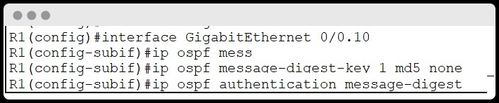
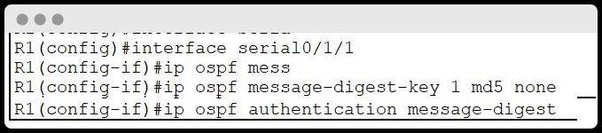
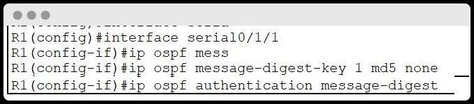

Mostramos el esquema de red que usaremos durante la guía:
Zona Roja: 2 PC's conectados al Switch0 y este conectado al Router1. A su vez el PC5 estará después conectado a una VLAN llamada administradores.
Zona amarilla: 2 PC's conectados al Switch1 y este conectado al Router2.
Zona Amarilla: 3 PC's conectados al Switch2 y este conectado al Router3. A su vez el PC6 estará conectado a una VLAN llamada administradores.
Zona azul: Estan interconectados Router1, Router2 y Router3, mediantes cables seriales, que componen el AREA 0 o bakcbone del protoclo OSPFv2, veremos mas adelante.
INFORMACIÓN DE CONFIGURACIÓN E INTERFACES DE LOS DISTINTOS DISPOSITIVOS
- PC1
- IP: 192.168.2.11
- Máscara de subred: 255.255.255.0
- Gateway: 192.168.2.1
- Interfaz a la que se conecta: FastEthernet0/1 del Switch0
- PC2
- IP: 192.168.2.12
- Máscara de subred: 255.255.255.0
- Gateway: 192.168.2.1
- Interfaz a la que se conecta: FastEthernet0/2 del Switch0
- PC3
- IP: 192.168.3.11
- Máscara de subred: 255.255.255.0
- Gateway: 192.168.3.1
- Interfaz a la que se conecta: FastEthernet0/1 del Switch2
- PC4
- IP: 192.168.3.12
- Máscara de subred: 255.255.255.0
- Gateway: 192.168.3.1
- Interfaz a la que se conecta: FastEthernet0/2 del Switch2
- PC5
- IP: 200.10.0.3
- Máscara de subred: 255.255.255.0
- Gateway: 200.10.0.1
- Interfaz a la que se conecta: FastEthernet0/1 del Switch0
- PC6
- IP: 200.10.0.4
- Máscara de subred: 255.255.255.0
- Gateway: 200.10.0.2
- Interfaz a la que se conecta: FastEthernet0/3 del Switch2
- PC7
- IP: 192.168.1.2
- Máscara de subred: 255.255.255.0
- Gateway: 192.168.1.1
- Interfaz a la que se conecta: FastEthernet0/2 del Switch0
- Switch0
- Interfaz a la que se conecta: GigaBitEthernet0/0 del Router1
- Switch1
- Interfaz a la que se conecta: GigaBitEthernet0/0 del Router2
- Switch2
- Interfaz a la que se conecta: GigaBitEthernet0/0 del Router3
- Router1
- IP: 192.168.1.1 /24
- Máscara de subred: 255.255.255.0
- Interfaz: GigaBitEthernet0/0
- Interfaz: Serial0/1/0 IP: 10.0.0.1 /30 Máscara subred: 255.255.255.252
- Interfaz: Serial0/1/1 IP: 10.0.0.5 /30 Máscara subred: 255.255.255.252
- Router2
- IP: 192.168.2.1 /24
- Máscara de subred: 255.255.255.0
- Interfaz: GigaBitEthernet0/0
- Interfaz: Serial0/1/0 IP: 10.0.0.2 /30 Máscara subred: 255.255.255.252
- Interfaz: Serial0/1/1 IP: 10.0.0.9 /30 Máscara subred: 255.255.255.252
- Router3
- IP: 192.168.3.1 /24
- Máscara de subred: 255.255.255.0
- Interfaz: GigaBitEthernet0/0
- Interfaz: Serial0/1/0 IP: 10.0.0.6 /30 Máscara subred: 255.255.255.252
- Interfaz: Serial0/1/1 IP: 10.0.0.10 /30 Máscara subred: 255.255.255.252
Configuración OSPFv2 a los diferentes Routers del esquema.
Le indicamos un ID, y elegimos las redes a las que está conectado directamente el Router1 y indicando el área "area 0" o backbone.
Aquí lo mismo, indicamos el ID con el que trabajamos del protocolo OSPFv2. Indicamos las redes a las que está conectado directamente el Router2 y indicando el área "area 0" o backbone. Y guardamos configuración y finalizamos con end.
De nuevo, indicamos ID. Y las redes que se conecta directamente el Router3 y indicando el área "area 0" o backbone. Guardamos y finalizamos.
Configuración de "Interfaces Pasivas".
Declararemos una serie de interfaces como pasivas, para que los distintos paquetes que se comunican en el protocolo OSPFv2. No vayan más allá de lo necesario. Es una medida de seguridad. Por si se interceptará tráfico para obtener información de como está estructurada la red. Y dejando que si circulen por las interfaces seriales de los 3 Routers.
Añadimos a OSPFv2, en los dos Routers correspondientes la red, donde se encuentran los equipos de la VLAN administradores.
Lista de todas las redes con sus adyacencias. En cada uno de los Routers.
Lo siguiente, que harémos será configurar la autenticación de OSPFv2 usando el cifrado MD5. De está manera los paquetes no irán en "texto plano".
Hemos configurado la interfaz GigabitEthernet 0/0, es la que conecta el Router con el Switch de una de las redes.

Aquí, hemos configurado la sub-interfaz, que se crea para la VLAN, ya que en esta red tenemos un host que pertenece a una VLAN de administradores.
Es la GigabitEthernet 0/0.10, que conecta el Router con el host de la VLAN.
 

En este caso pasamos a configurar la interfaz Serial0/1/0 y Serial0/1/1 que conecta el Router1 con los otros 2 routers.
Hemos configurado la interfaz GigabitEthernet 0/0, es la que conecta el Router con el Switch de una de las redes.
En este caso pasamos a configurar la interfaz Serial0/1/0 y Serial0/1/1 que conecta el Router2 con los otros 2 routers.
Hemos configurado la interfaz GigabitEthernet 0/0, es la que conecta el Router con el Switch de una de las redes.
Aquí, hemos configurado la sub-interfaz, que se crea para la VLAN, ya que en esta red también tenemos el otro host que pertenece a una VLAN de administradores.
Es la GigabitEthernet 0/0.10, que conecta el Router con el host de la VLAN.
En este caso pasamos a configurar la interfaz Serial0/1/0. Puse solo de una de las interfaces serial. Porque el procedimiento es el mismo. Y creo que se ha entendido.